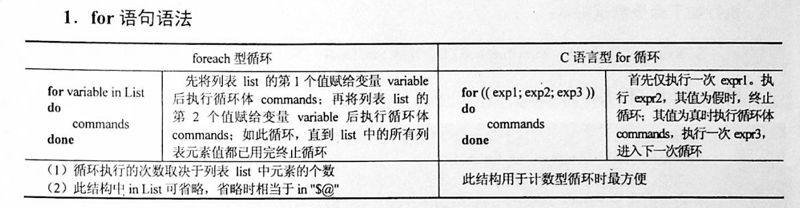

Contents
3.4. 4 流程控制¶
3.4.1. 1 if语句¶
1.1 单分支¶
if condition
then
command1
command2
...
commandN
fi
NOT¶
if ! condition:
then
commad1
fi
举例说明
#!/bin/bash
echo "非空时候 if判断的返回"
if [ 0 ];then
echo "Not None"
else
echo "None"
fi
echo "为空时 if判断的返回"
if [ "" ];then
echo "Not None"
else
echo "None"
fi
echo "使用！取反空 if判断的返回"
if [ ! "" ];then
echo "Not None"
else
echo "None"
fi
echo "使用！取反非空 if判断的返回"
if [ ! 1 ];then
echo "Not None"
else
echo "None"
fi
AND¶
if condition1 && condition2:
then
command1
else
command2
fi
if [ -r $file ] && [ -w $file ] && [ -x $file ]:
then
echo "You have read、write and execute permission on $file"
fi
OR¶
if condition1 || condition2:
then
command1
fi
eg:
if [ `ps -ef |grep /usr/sbin/sshd|grep -v grep|wc -l` -eq 1 ];then echo "sshd server exist";fi
1.2 双分支¶
if condition
then
command1
command2
...
commandN
else
command
fi
eg:
if [ `ps -ef |grep /usr/sbin/sshd|grep -v grep|wc -l` -eq 0 ];then echo "sshd server exist";else echo "sshd server not exist";fi
1.3 多分支¶
if condition1
then
command1
elif condition2
then
command2
else
commandN
fi
eg:
#! /bin/bash
cmd=`rpm -q centos-release|cut -d- -f3`
if [ $cmd -eq 6 ];then
echo "sysversion is $cmd"
elif [ $cmd -eq 7 ];then
echo "sysversion is $cmd"
else
echo "sysversion is `rpm -q centos-release`"
fi
if不一定要使用test
#!/usr/bin/env bash
dir=/home/bozo
//"2>/dev/null"会隐藏错误的信息
if cd "$dir" 2>/dev/null;then
echo "Now in $dir"
else
echo "Can't change to $dir"
fi
#!/bin/bash
#测试计算机的CPU品牌是AMD还是Intel。
#grep的-q选项，可以让grep进入静默模式，不管过滤到数据还是没有，都不显示输出结果。
#if命令会通过grep命令的返回值自动判断是否过滤到数据。
if grep -q AMD /proc/cpuinfo; then
echo "AMD CPU"
fi
if grep -q Intel /proc/cpuinfo; then
echo "Intel CPU"
fi
通过读取位置变量,实现分区管理工作
#!/bin/bash
#功能描述(Description):通过读取位置变量,实现分区管理工作.
#测试位置变量的个数
if [ $# -ne 2 ];then
echo -e "\033[91m\t参数有误...\033[0m"
echo "用法:$0 <磁盘名称> <create|new|remove|query>"
exit
fi
#测试磁盘是否存在
if [ ! -b $1 ];then
echo -e "\033[91m磁盘不存在!\033[0m"
exit
fi
#根据不同的指令对磁盘进行分区管理
if [[ $2 == create ]];then
parted -s $1 mklabel gpt
elif [[ $2 == new ]];then
parted -s $1 mkpart primary 1 100%
elif [[ $2 == remove ]];then
parted -s $1 rm 1
elif [[ $2 == query ]];then
parted -s $1 print
else
clear
echo -e "\033[91m\t操作指令有误...\033[0m"
echo "可用指令:[create|new|remove|query]."
fi
3.4.2. 2 for循环¶
for var in item1 item2 ... itemN
do
command1
command2
...
commandN
done
2.1 带列表的for循环语句¶
eg1:
for i in /*;
do
echo -e " \c";
find $i |wc -l|sort -nr;
done
eg2:
#!/bin/bash
for i in {1..10};
do
echo $i
done
或者
for i in {a..z};do;echo $i;done
#!/bin/bash
#功能描述(Description):打印各种色块形状.
#练习循环嵌套
for i in $(seq 10)
do
for j in $(seq $i)
do
echo -ne "\033[101m \033[0m"
done
echo
done
eg3:
#!/bin/bash
for i in "$@"; # $@是将位置参数作为单个来处理
echo $i
也可以这样写：
$ for FILENAME in `ls chap?`; do mv $FILENAME $FILENAME~; done
2.2 for 循环C 语言风格的语法¶
常用于计数、打印数字序列：
for (( expr1 ; expr2 ; expr3 )) ; do list ; done
#!/bin/bash
for ((i=1;i<=5;i++)); # 也可以 i--
do
echo $i
done
for ((i=1,j=5;i<=5;i++,j--))
do
echo "$i $j"
done
for 打印99乘法表
#!/usr/bin/env bash
for ((i=1; i<=9; i++))
do
for ((j=1; j<=9; j++));do
let sum=${i}*${j}
echo -n "${i}*${j}=${sum} "
done
done
默认 for 循环的取值列表是以空白符分隔，也就是第一章讲系统变量里的$IFS:
#!/bin/bash
OLD_IFS=$IFS
IFS=":"
for i in $(head -1 /etc/passwd); do
echo $i
done
#!/bin/bash
for ip in 192.168.1.{1..254}; do
if ping -c 1 $ip >/dev/null; then
echo "$ip OK."
else
echo "$ip NO!"
fi
done
2.3 for循环的死循环写法¶
可用于监控
示例1
#!/usr/bin/env bash
#usage:xxx
#scripts_name:xxx.sh
for ((;1;)); do
echo "infinite loop........"
sleep 1
done
示例2
#!/bin/bash
for ((i=0; i<1; i+=0))
do
echo "infinite loop"
sleep 1
done
读取文件,判断url可用性
#!/bin/bash
#function:check url
filename=urllist.txt
for url in $(cat $filename)
do
status=`curl -I $url -s|awk '/HTTP/{print $2}'`
if [ $status == "200" ];then
echo "Url:$url is ok!status is $status"
else
echo "Url:$url is error!status is $status"
fi
done
2.4 不带列表的for循环语句¶
#! /bin/bash
# 不带条件列表
for arg
do
# 输出每个参数
echo "$arg"
done
2.5 使用for循环语句处理数组¶
使用for循环遍历数组非常方便
for variable in ${array[*]}
do
statement1
statement2
...
done
eg:
#! /bin/bash
# 定义数组
array=(Monday Tuesday Wednesday Thursday Friday Saturday Sunday)
# 通过 for 循环遍历数组元素
for day in ${array[*]}
do
# 输出每个数组元素的值
echo $day
done
3.4.3. 3 while语句¶
格式：
while 条件表达式:do
command
done
eg
#!/bin/bash
N=0
while [ $N -lt 5 ]; do
let N++
echo $N
done
下面的例子通过算术运算控制循环的次数：
#!/bin/sh
COUNTER=1
while [ "$COUNTER" -lt 10 ]; do
echo "Here we go again"
COUNTER=$(($COUNTER+1))
done
eg
#!/bin/bash
#功能描述(Description):while基本语法演示.
#通过grep过滤httpd，检测httpd服务是否为启动状态.
while ps aux | grep -v grep | grep -q httpd
do
clear
echo " httpd运行状况: "
echo "----------------------------------"
echo -e "\033[32mhttpd 正在运行中...\033[0m"
echo "----------------------------------"
sleep 0.5
done
echo "httpd 被关闭"
无限循环，可以将脚本放到后台做deam
#!/bin/bash
while true
do
HTTPD_STATUS=`service httpd status| grep running`
if [ -z "$HTTPD_STATUS" ]; then
echo "HTTPD is stopped, try to restart"
service httpd restart
else
echo "HTTPD is running, wait 5 sec until next check"
fi
sleep 5
done
死循环的三种写法
#!/usr/bin/env bash
while :; do
echo "ctrl +c to stop...."
sleep 1
done
while ((1)); do
echo "ctrl +c to stop...."
sleep 1
done
while true; do
echo "ctrl +c to stop...."
sleep 1
done
选择菜单，小例子
#!/bin/sh
conntinue(){
read -p "Press [Enter] key to continue ...." readEnterKey
}
while :; do
clear
echo "======================================="
echo " MAIN - MENU "
echo "======================================="
echo "1. Display date and time "
echo "2. Display system information"
echo "3. Display what users are doing. "
echo "4. Exit"
read -p "Enter your choice [ 1-4]:" choice #从标准输入中读取用户的输入，赋值给choice
case $choice in
1 )
echo "Today is $(date +%Y-%m-%d)" #打印当前日期
echo "Current time: $(date +%H:%M:%S)"
conntinue
;;
2 )
uname -a
conntinue
;;
3 )
w
conntinue
;;
4 )
echo "Bye!"
exit 0
;;
* )
echo "Error :INVALID OPTION!!"
conntinue
;;
esac
done
条件表达式为 true，将会产生死循环,利用此可以将脚本一直放在后台进行执行 eg
#!/bin/bash
IP=10.75.128.8
dir="/DATA/oracle/netdir/"
if [ ! -d ${dir} ];then
mkdir -p ${dir}
fi
echo 1 > ${dir}ping.lock
while true
do
Time=`date +%F`
TIME="${Time} 23:59"
if [ "${data}" == "${TIME}" ];then
mkdir ${dir}${Time} && mv ${dir}ping2.log ${dir}${Time}-ping2.log
mv ${dir}${Time}-ping2.log ${dir}${Time}
fi
find ${dir} -mtime +7 -name "*-ping2.log" -exec rm -rf {} \;
find ${dir} -mtime +7 -type d -exec rm -rf {} \;
data=`date +%F' '%H:%M`
data1=`date +%F' '%H:%M:%S`
echo "------------${data1}---------------">>${dir}ping2.log
ping -c 10 ${IP} >>${dir}ping2.log
if [ $? -eq 1 ];then
STAT=`cat ${dir}ping.lock`
if [ ${STAT} -eq 1 ];then
/usr/bin/python /DATA/oracle/netdir/GFweixin.py xuel GLP-VPN "GLP from PDC(172.16.6.1
50) ping 金融云(10.75.128.8)中断，请检查深信服VPN！ \n TIME:${data1}" echo 0 > ${dir}ping.lock
else
continue
fi
else
STAT=`cat ${dir}ping.lock`
if [ ${STAT} -eq 0 ];then
/usr/bin/python /DATA/oracle/netdir/GFweixin.py xuel GLP-VPN "GLP from PDC(172.16.6.1
50) ping 金融云(10.75.128.8)恢复！ \n TIME:${data1}" echo 1 > ${dir}ping.lock
else
continue
fi
fi
done
文件处理
eg3:
#!/bin/bash
#function:check url
filename=urllist.txt
cat $filename | while read url;do
status=`curl -I $url -s|awk '/HTTP/{print $2}'`
if [ $status == "200" ];then
echo "Url:$url is ok!status is $status"
else
echo "Url:$url is error!status is $status"
fi
done
或
#!/bin/bash
#function:check url
filename=urllist.txt
while read url;
do
status=`curl -I $url -s|awk '/HTTP/{print $2}'`
if [ $status == "200" ];then
echo "Url:$url is ok!status is ${status}"
else
echo "Url:$url is error!status is ${status}"
fi
done <$filename
while读取文件的3种方法
· 使用while循环处理文本文件 
#!/bin/sh
# @Author: huxiaojian
# @Date: 2018-09-28 15:38:08
# @Last Modified by: huxiaojian
# @Last Modified time: 2018-09-28 15:43:04
# 读取文件方法1
count=1
cat test | while read line ; do
echo "Line $count: $line"
count=$[ $count + 1 ]
done
echo "Finished processing the file"
# 读取文件方法2
[root@localhost ~]# cat while04.sh
#!/bin/bash
while read LINE do
NAME=`echo $LINE | awk '{print $1}'`
AGE=`echo $LINE | awk '{print $2}'`
Sex=`echo $LINE | awk '{print $3}'`
echo "My name is $NAME, I'm $AGE years old, I'm a $Sex"
done < student_info.txt
举例
#!/bin/sh
file=$1
if [ $# -lt ]; then
echo "Usage: $0 FILEPATH"
exit
fi
while read -r f1 f2 f3
do
echo "Field 1: $f1 ===> Field2:$f2===>Field3:$f3"
done <"$file"
## 读取文件3，使用for循环的方式
$ cat example.sh
#!/bin/bash
for i in `cat users.txt`
do
#echo "$i"
id $i &>/dev/null
if [ "$?" -eq 0 ];then
echo "$i already exists...."
else
echo "add $i .... && create $i...."
fi
done
3.4.4. 4 until语句¶
until循环也是运行前测试，但是until采用的是测试假值的方式，当测试结果为假时才继续执行循环体，直到测试为真时才停止循环。其语法如下：
until expression
do
command
done
until的无限循环
#方法一
until ((0))
do
command
done
#方法二
until false
do
command
done
until循环语句来批量地增加用户示例
#! /bin/bash
# 定义变量 i
i=1
# 一直循环到变量 i 的值为 21
until [ "$i" -eq 21 ]
do
# 执行 useradd 命令添加用户
useradd user$i
# 修改用户密码
echo "password" | passwd --stdin user$i > /dev/null
# 循环变量自增
let "i++"
done
3.4.5. 5 break 和 continue 语句¶
break跳出循环
#!/bin/bash
#功能描述(Description):break基本语法演示.
for i in {1..5}
do
[ $i -eq 3 ] && break
echo $i
done
echo "game over."
continue
#!/bin/bash
N=0
while [ $N -lt 5 ]; do
let N++
if [ $N -eq 3 ]; then
continue
fi
echo $N
done
3.4.6. 6 case语句¶
语句
case 模式名 in
模式 1)
命令
;;
模式 2)
命令
;;
*)
不符合以上模式执行的命令
esac
eg
#!/bin/bash
case $1 in
start)
echo "start."
;;
stop)
echo "stop."
;;
restart)
echo "restart."
;;
*)
echo "Usage: nfs-kernel-server {start|stop|status|reload|force-reload|restart}"
exit 1
esac
eg
#!/usr/bin/env bash
case $ANSWER in
y|Y|YES|yes|Yes|yEs|yeS|YEs|yES?)
echo "You input Yes..."
;;
*)
echo
echo "Because?the?account,?$USER_ACCOUNT,?is?not?"
echo "the?one?you?wish?to?delete,?we?are?leaving?the?script..."
echo
exi
;;
esac
eg
$ cat checkkeys.sh
#!/bin/bash
read -p "请输入一个字符，并按enter键确认：" key
case "$key" in
[a-z]|[A-Z])
echo "您输入的是字母。"
;;
[[:digit:]] )
echo "您输入的是数字。"
;;
*)
echo "您输入的是空格、功能键或其他控制字符."
esac
eg
shopt -s extglob
read -p "请输入任意字符:" key
case $key in
+([[:lower:]]))
echo "您输入的是小写字母.";;
+([[:upper:]]))
echo "您输入的是大写字母.";;
+([0-9]))
echo "您输入的是数字.";;
*)
echo "您输入的是其他特殊符号.";;
esac
eg
#!/usr/bin/env bash
#usage:xxx
#scripts_name:xxx.sh
# author：xiaojian
case $1 in
*.jpg)
echo "$1 is jpg file"
;;
*.txt)
echo "$1 is txt file"
;;
*.avi | *.wmv)
echo "$1 is mplayer file"
;;
*.pdf)
echo "$1 is pdf file"
;;
*.py)
echo "$1 is python file"
;;
*)
echo "don't know how to read this file;"
;;
esac
eg
#!/bin/sh
# @Author: hujianli
# @Date: 2018-11-18 16:03:29
# @Last Modified by: hujianli
# @Last Modified time: 2018-11-18 22:10:54
YES_NO_choice(){
read -t 10 -p "Please input you commit ,wait 5.....to exit: " input
case $input in
[yY]|[yY][eE][sS] )
echo "YES!!!!!"
;;
[nN]|[nN][oO] )
echo "NO Error!!!!!"
;;
*)
echo "============================"
;;
esac
read -p "您确定需要执行该操作吗(y|n)?" key
case $key in
[Yy]|[Yy][Ee][Ss])
echo "注意:您选择的是yes.";;
[Nn]|[Nn][Oo])
echo "您选择的是no.";;
*)
echo "无效的输入";;
esac
case/esac
case命令可类比C语言的switch/case语句，esac表示case语句块的结束。
C语言的case只能匹配整型或字符型常量表达式，而Shell脚本的case可以匹配字符串和Wildcard，
每个匹配分支可以有若干条命令，末尾必须以;;结束，
执行时找到第一个匹配的分支并执行相应的命令，然后直接跳到esac之后，不需要像C语言一样用break跳出。
#! /bin/sh
echo "Is it morning? Please answer yes or no."
read YES_OR_NO
case "$YES_OR_NO" in
yes|y|Yes|YES)
echo "Good Morning!";;
[nN]*)
echo "Good Afternoon!";;
*)
echo "Sorry, $YES_OR_NO not recognized. Enter yes or no."
exit 1;;
esac
exit 0
read -p "请输入任意字符:" key
case $key in
[a-z])
echo "您输入的是小写字母.";;
[A-Z])
echo "您输入的是大写字母.";;
[0-9])
echo "您输入的是数字.";;
*)
echo "您输入的是其他特殊符号.";;
esac
演示通配符的作用
#!/bin/bash
#演示扩展通配符的作用.
shopt -s extglob
read -p "请输入任意字符:" key
case $key in
+([Yy]))
echo "您输入了至少1个[Yy]";;
?([Nn])o)
echo "您输入的是[Nn]o或仅为o.";;
t*(o))
echo "您输入的是t或to或too...";;
@([0-9]))
echo "您输入的是单个数字.";;
!([[:punct:]]))
echo "您输入的不是标点符号.";;
*)
echo "您输入的是其他符号.";;
esac
3.4.7. 7 select语句¶
制作一个选择菜单
eg: ```shell #!/bin/sh # @Author: hujianli # @Date: 2018-11-13 13:17:13 # @Last Modified by: hujianli # @Last Modified time: 2018-11-13 13:22:57 PS3=“Run command:”
select choice in date w hostname “uname -a” Exit do case $choice in date ) echo “Current system date and time:” echo “=======================================” $choice ;; w ) echo “========================================” echo “Who is logged on and what they are doing” echo “========================================” $choice ;; hostname ) echo “========================================” echo “Hostname:” echo “========================================” $choice
;;
"uname -a" )
echo "========================================"
echo "System information"
echo "========================================"
$choice
;;
Exit )
echo "Bye!"
exit
;;
esac
done ```